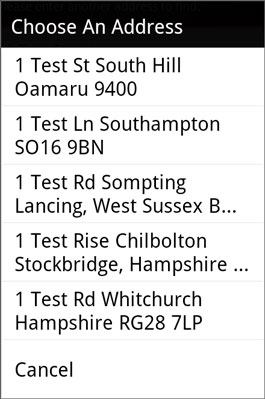

Help ->
Finder Screen
This is the initial screen for the app used to find an address.
Note: your screen may look slightly different from the screenshots, depending on the version you have installed.
What to do with the location
Decide what you want to do with the address you're trying to locate.
Show on Map - show the location in the simple built-in map
Use Location - do something with the location,
e.g. show the location in apps like StreetView, or automatically enter the location in some map utility websites.
Hint: you can also set this option in the app preferences.
Getting the address to locate
There are various ways to get an address to locate.
1. Manually enter an address, and hit the search button.
Hint: the search button is disabled until you start typing in an address.
2. Contact Address - find an address from your contact list.
3. Address from SMS - get an address sent to you as an SMS.
Address Not Found
If the app cannot locate your address, a dialog will pop up to let you know.
Multiple Search Results
Sometimes the address search will return multiple possible locations.
Depending on the Pick Location preference that you have set, the app will either use the 'best' result (as determined by the geocoding service), or pop up a dialog with the top results for you to select from.